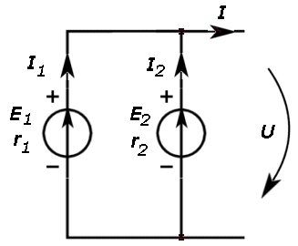

Două sau mai multe generatoare electrice sunt grupate în serie
dacă sunt străbătute de aceeaşi intensitate a curentului.
Două sau mai multe generatoare electrice sunt grupate în serie
dacă sunt străbătute de aceeaşi intensitate a curentului.
Producerea şi utilizarea curentului continuu |
Legile circuitelor electrice |
B-6. |
Gruparea generatoarelor electrice |
Într−o lanternă, cum este cea din figura 6−1, trebuie să introduci două celule galvanice, una după alta.
Figura 6-1. Dispunerea celulelor galvanice în interiorul lanternei.
Două sau mai multe generatoare electrice sunt grupate în serie
dacă sunt străbătute de aceeaşi intensitate a curentului.
 Provocarea 6-1
Provocarea 6-1
Cât te aştepţi să fie t.e.m. a bateriei formată din două celule grupate în serie, ca în figura 6−2?
Figura 6-2. a) Două generatoare grupate în serie. b) Generatorul echivalent.
Aplicând a doua lege a lui Kirchhoff (legea tensiunilor) pe ochiul din figura 6−2a, obţii:

Astfel, tensiunea la bornele grupării este:

| (1) |
Cea mai mare tensiune la bornele grupării se obţine pentru I=0. Astfel, t.e.m. echivalentă a grupării serie a celor două generatoare este:

Generalizând pentru oricâte generatoare grupate în serie:
Tensiunea electromotoare echivalentă a unei grupări de generatoare
în serie este suma algebrică a t.e.m. ale generatoarelor grupării:

Provocarea 6-2
Cât te aştepţi să fie rezistenţa internă a unei grupări de generatoare în serie?
Dacă bornele grupării ar fi scurtcircuitate, intensitatea curentului de scurtcircuit ar fi:

În regim de scurtcircuit, tensiunea la bornele grupării ar fi nulă, astfel că, din relaţia (1) poţi obţine:

De aici, obţii:

Aşadar,
Rezistenţa internă a unei grupări de generatoare în serie este suma
rezistenţelor interne ale generatoarelor grupării:

Aceasta este chiar rezistenţa echivalentă a grupării în serie a rezistenţelor interne ale generatoarelor!
Provocarea 6-3
Cât te aştepţi să fie t.e.m. a unei grupări de două celule în serie, dacă aceste sunt conectate în opoziţie (ca în figura 6−3)?
Dar rezistenţa internă a grupării?
| Figura 6−3. Două celule în opoziţie. |
 Activitatea experimentală 6-1
Activitatea experimentală 6-1
Investighează gruparea în serie a generatoarelor electrice. Lucrează în echipă.
Pasul 1. Măsuraţi cu multimetrul t.e.m. ale câtorva generatoare aflate la îndemână. Lipiti pe fiecare o etichetă cu valoarea măsurată.
Pasul 2. Imaginaţi diferite scheme de grupare în serie a generatoarelor (cu alternarea polarităţilor sau în opoziţie) şi calculaţi valoarea aşteptată a t.e.m. a fiecărei grupări.
Pasul 3. Realizaţi grupările imaginate şi măsuraţi cu multimetrul t.e.m. a fiecărei grupări. Comparaţi rezultatele măsurătorilor cu valorile aşteptate.
Provocarea 6-4
Cât te aştepţi să fie t.e.m. a unei grupări de N generatoare identice, în serie, cu alternarea polarităţilor?
Dar rezistenţa internă a grupării?
Multe dintre bateriile pe care le foloseşti sunt de fapt grupări de generatoare identice, în serie, cu alternarea polarităţilor. Bateria plată de 4,5 V (figura 6−4) este de fapt o grupare în serie de trei celule identice, cu alternarea polarităţilor.
| Figura 6−4. Baterie care este o grupare în serie de celule, cu alternarea polarităţilor. |
Provocarea 6-5
Cât te aştepţi să fie t.e.m. echivalentă a grupării reprezentată în figura 6−5?
|  | Figura 6−5. O grupare în paralel de generatoare. |
Două sau mai multe generatoare sunt grupate în paralel dacă au
aceeaşi tensiune la borne.
Dacă aplici legea tensiunilor pentru ochiul format de generatorul cu t.e.m. E1 şi arcul de tensiune U, obţii:

| (2) |
Asemănător, pentru ochiul format de generatorul cu t.e.m. E2 şi arcul de tensiue U, obţii:

| (3) |
Aplicând legea curenţilor pentru unul dintre nodurile reţelei, obţii:

| (4) |
Înlocuind în (4) expresile intensităţilor I1 şi I2 obţinute din (2), respectiv (3), obţii:

De aici poţi obţine expresia tensiunii de la bornele grupării:

| (5) |
Cea mai mare tensiune la bornele grupării se obţine pentru I=0. Astfel, t.e.m. echivalentă a grupării în paralel a celor două generatoare este:

Generalizând pentru oricâte generatoare grupate în paralel:
Tensiunea electromotoare a unei grupări de generatoare în paralel este:

Provocarea 6-6
Cât te aştepţi să fie rezistenţa internă a grupării în paralel a două generatoare?
Dacă bornele grupării ar fi scurtcircuitate, tensiunea la borne ar fi nulă. Astfel că, din relaţia (5):

obţii expresia intensităţii curentului de scurtcircuit:

Pe de altă parte, intensitatea curentului de scurtcircuit este:

astfel că rezistenţa interna a grupării în paralel a celor două generatoare este:

Generalizând pentru oricâte generatoare grupate în paralel:
Rezistenţa internă a unei grupări de generatoare în paralel este:

Aceasta este chiar rezistenţa echivalentă a grupării în paralel a rezistenţelor interne ale generatoarelor!
Provocarea 6-7
Cât te aştepţi să fie t.e.m. a unei grupări în paralel de două celule, dacă acestea sunt conectate în opoziţie, ca în figura 6−6?
Dar rezistenţa internă a grupării?
 |
Figura 6−6. O grupare în paralel de celule în opoziţie. |
Activitatea experimentală 6-2
Investighează gruparea în paralel a generatoarelor electrice utilizate în activitatea experimentală precedentă. Lucrează în echipă.
Pasul 1. Imaginaţi diferite scheme de grupare în paralel a generatoarelor (cu respectarea polarităţilor sau în opoziţie) şi calculaţi valoarea aşteptată a t.e.m. a fiecărei grupări.
Pasul 2. Realizaţi grupările imaginate şi măsuraţi cu multimetrul t.e.m. a fiecărei grupări. Comparaţi rezultatele măsurătorilor cu valorile aşteptate.
Provocarea 6-8
Cât te aştepţi să fie t.e.m. a unei grupări de N generatoare identice, în paralel, cu respectarea polarităţilor?
Dar rezistenţa internă a grupării?